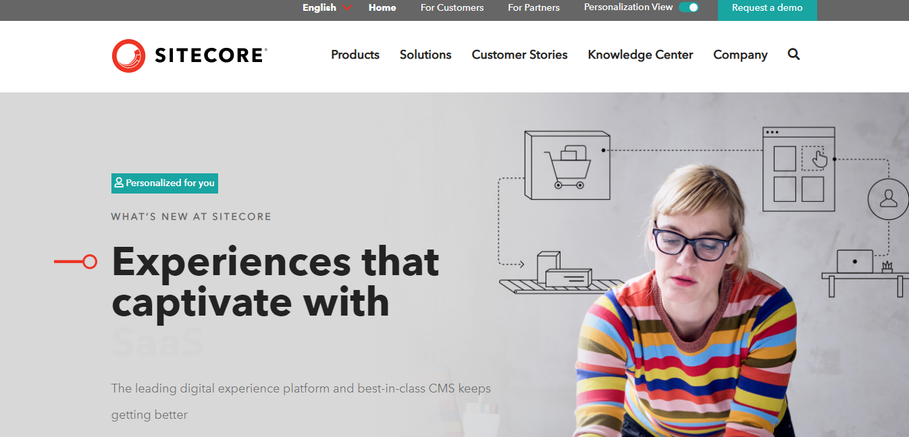

Top 10 Amazing CMS For Every Web Designer
By Shaw on November 13, 2019 | Category | CMS | Content Management Systems | 23 Comments | Views (274)
Top 10 Amazing CMS For Every Web Designer
In today's digital market every organization or business necessitates creating strong web proximity (a website) to reach a wider range of clients as well as to gain a competitive ground over their various competitors. Websites increase the competitive edge of business and necessitate presenting the ability for multiple website administrators to do authoring, collaboration and to manage the documents and output. A Web Content Management System, therefore, comes in beneficial to help with such tasks.
What Is content management system (CMS)?
A content management system (CMS) is a software application or a set of related programs that are used to create and manage digital content. CMSes are typically used for enterprise content management (ECM) and web content management (WCM). A WCM facilitates collaborative authoring for website.
Before we dive deep into this lesson lets have a look at various need to know stuff about (Content Management System (CMS)
Advantages of Content Management System (CMS) Platforms
- It's easy for the non-technically minded.
- It allows multiple users.
- It improves site maintenance.
- It streamlines scheduling.
- Design changes are simple.
- You're in control.
- It helps you manage content.
The key functions of most CMS applications includes:
- Storing.
- Indexing.
- Reporting.
- Publishing.
- Access control.
- Revision control.
- Rormat management.
- Search and retrieval.
1. WordPress Content Management Systems (CMS)
WordPress is for everyone
It is among the most greatly used website creation tools a round the world and also a powerful CMS that is why is top of our list. WordPress is a web software platform that is usually used with the MySQL or MariaDB database servers but can also use the SQLite database engine to creates and manages beautiful websites, blogs and apps for businesses and content marketers and features hundreds of high- quality themes and plugins.
You can easily download and install the WordPress script and Create your website or blog in just a few minutes. Plus, you can host your website blog for free using the WordPress.com service It’s a great publishing platform where millions of people and bloggers can publish their personal and professional contents and personalize these contents by adding powerful widgets and editing the background of blogs to engage with millions of fans and friends.
- Published year: 2003
- Cost: open source (Free)
- Website:https://wordpress.org
- Blog platform:www.wordpress.com
- The technique: PHP, MySQL
Advantages of Using WordPress for Developing Business Website
- WordPress is Cost Effective.
- Update Your Site Anywhere You Are.
- Convenient Syndication.
- Upgrade Your Site's Capabilities Easily.
- Responsive Web Design.
- Ideal for Aggressive Content Marketing.
- Ultimate Social Media Integration.
Disadvantages of A WordPress CMS.
- Vulnerability. Unquestionably the biggest disadvantage of WordPress is its security.
- Can be expensive. While WordPress itself is free, when looking at the whole picture there are significant costs.
- Needs frequent updates.
- Customisation needs Coding
2.Drupal Content Management System (CMS)
Drupal is loved by developers who need to design technically complicated websites. It is an advanced publishing platform that is not only free but also provides high-value solutions to managing your online branding image. Drupal is the most technically advanced and good for technical people who like to get into the technicality Drupal is a free and open-source content management framework written in PHP and distributed under the GNU General Public License. Drupal provides a back-end framework for at least 2.3% of all websites worldwide. Drupal is a scalable, open platform for web content management and digital experiences. Drupal gives deep capacities and endless flexibility on the web.
- License: GPLv2+
- Website
- Platform: Web platform
- Written in: PHP
- Stable release: 8.7.8 / 2019-10-02
- Developer(s): Drupal community
- Operating system: Unix-like, Windows
Advantages of Drupal over Other Content Management Systems (CMS)
- Flexibility. One of the major selling points of Drupal is its ability to create and manage a wide variety of content types, including but not limited to videos, polls, blogs, podcasts, and statistics.
- Customizability.
- Scalability.
- Community.
- Security.
Disadvantages of Drupal Content Management Systems (CMS)
- The difficulty with familiarization. For those users who have not previously built a site, the creation and promotion of a site using Drupal can be difficult.
- Advanced interface.
- High system requirements.
- The lack of high-quality designs in free access.
- Difficulty in the installation of updates and program modules.
3. Joomla Content Management System (CMS)

Joomla is a free and open-source content management system for publishing web content,
developed by Open Source Matters, Inc. It is built on a model–view–controller web application
framework that can be used independently of the CMS.
Joomla is the mobile-ready and user-friendly way to build your website and allows you to
choose from thousands of features and designs.
Joomla is mainly used for, E-commerce and Social networking sites.
- License: GPLv2
- Written in: PHP
- Stable release: 3.9.11 / 13 August 2019; 2 months ago
- Preview release: 4.0.0-alpha11 / 19 August 2019; 2 months ago
- Initial release date: September 22, 2005
- Developer(s): Open Source Matters, Inc. and the Joomla community
Advantages 0f Joomla Content Management System (CMS)
- Good for social networking and e-commerce.
- SEO capabilities.
- Excellent plugins.
- Usability and versatility.
- Good Support.
- Adaptability and flexibility.
- Good for social networking and e-commerce.
- Open Source (Free.)
Disadvantages of Joomla Content Management System (CMS)
Higher Degree of Complexity than WordPress When matched to WordPress, a notable disadvantage of Joomla is that it is more complicated. Its user interface is more complex, and it has more functions that make it more complicated than WordPress or other simpler CMS platforms. This complexity translates to a learning curve
4.HubSpot Content Management System (CMS)
HubSpot Content Management System (CMS) consists of several tools that all work together to give you control of all your web assets. HubSpot is a developer and marketer of software products for inbound marketing and sales. It was founded by Brian Halligan and Dharmesh Shah in 2006. Its products and services aim to provide tools for social media marketing, content management, web analytics and search engine optimization.
- Published year: 2006
- Cost: open source
- Website: www.hubspot.com
- Technique: Java, MySQL, Javascript.
Advantages HubSpot has over other CMS
- Smart Content. Traditional Content Management Systems gain popularity for allowing users to easily manage and update the content on their site.
- Custom Design.
- Responsive Design.
- Lightning Speed.
- SEO Benefits.
- Analytic Tracking.
Disadvantages HubSpot has over other CMS
- HubSpot ecosystem is tiny but growing. If extra plug-n-play functionality (membership, forums, checkout, analytics, etc.) is in your plans, the CMS is at a disadvantage.
- Limited Plugin & Theme
- No Control over Backup & Recovery
You cant manually export your content from the CMS. It cant be used to instantly restore a point-in-time version of your site.
5.Sitecore Content Management System (CMS)
Sitecore is a CMS solution that is consolidated with customer experience management. It allows users to control the overall customer experience throughout their apps and websites. This Content Management System (CMS) offers features that help you to analyze consumer engagement with your content. The best part is it can handle the content of any type. Sitecore is a customer experience management company that provides web content management and multichannel marketing automation software. The company was founded in 2001 in Denmark.
- CEO: Mark Frost (Jul 1, 2017–)
- Headquarters: San Francisco, California, United States
- Founded: April 26, 2001, Denmark
- Type of business: Private
- Subsidiaries: Stylelabs BVBA, Sitecore USA, Inc., MORE
- Founders: Michael Seifert, Lars Fløe Nielsen, Ole Sas Thrane, Thomas Albert, Peter Christensen, Jakob Christensen
Advantages OF Sitecore Content Management System (CMS)
- Tracking & Analytics.
- Personalization.
- Building marketing campaigns.
- Content Optimization.
- Gaining a single view of individual customers.
- Relevant content to help build engagement.
Disadvantages of Sitecore Content Management System (CMS)
Needs heavy customizations. Less of user guides for the new workers who haven't any idea about that. High cost. As it usually happens in software development, the cost depends greatly on the company's business specifics and requirements.
6. Magento Content Management System (CMS)
Magento (and more specifically, Magento Commerce) has proven to be a popular choice for enterprise eCommerce brands Magento is one of the most popular CMS platforms for e-commerce brands. Nearly 20% of e-commerce websites in its library. The global corporations such as burger king and coca-cola are using Magento as a content management platform.
- License: OSL v3, AFL
- Initial release: March 31, 2008; 11 years ago
- Stable release: 2.3.3 / 2019-10-08
- Developer(s): Magento, Inc
- Written in: PHP
Advantages to Using Magento Ecommerce
- Versatile Content Management.
- Mobile-Friendly Configuration.
- Advanced Search Engine Optimization.
- Powerful and Spacious.
- Built-in Upsells and Cross-sells.
- Easy Third-party Integrations.
- Customize Security Permissions.
Disadvantages of Magento
The main disadvantage of Magento is using PHP. During the heavy process, the Magento application may consume more gigabytes of RAM. Although by using a proper server this disadvantage can be overcome. PHP will not handle the load often regardless of the amount of hardware that is thrown at it.
7. Open Content Management System (CMS)
OpenCms is a website content management system (CMS) that enables maintaining a public website, an extranet or an intranet with little or no help by an external or internet professional. OpenCms helps to reduce IT costs you have FULL ACCESS TO THE CORE SOURCE CODE which can be extended and rebuilt in any way, without restrictions. optional SUPPORT IS AVAILABLE from several companies, reducing dependency on the deploying software consultancy. OpenCms is an open-source enterprise-grade content management system designed specifically for maintaining websites.
- Stable release: 11.0.0 / 2019-04-30
- License: GNU Lesser General Public License
- Programming language: Java
- Platforms: Java, XML
Advantages of using an open-source CMS
- Open source solutions give you freedom and flexibility.
- Open Source Content Management Systems are cost effective.
- The myth of closed source software as being more secure
- Frequent updates and support from a huge community.
8. SliverStripe Content Management System (CMS)
Silverstripe concentrates in creative strategy and digital problem-solving. Silverstripe CMS is the spontaneous, open-source content management system and flexible framework loved by editors and developers alike. It presents an out of the box web-based administration panel that enables users to make modifications to parts of the website, which includes a website editor. SilverStripe has been downloaded more than 350,000 circumstances and there is a powerful advancement group.
- Stable release: 4.4.4 / 2019-09-24
- License: BSD License
- Programming language: PHP
Advantages of SilverStripe:
- Effective integration with other software and platforms.
- Open-source platform.
- SilverStripe direct support.
- Highly active developer community.
- Ajax site tree.
- Search engine friendly.
- Very malleable CMS.
- Highly flexible for development.
Disadvantages of using SilverStripe
- Require a higher amount of development time and/or resources.
- Relatively new compared to most CMS.
- Lack of available resources and documentation online.
- A limited number of developed plugins and modules.
9. Django Content Management System (CMS)
Django CMS is a free and open-source content management system platform for publishing content on the World Wide Web and intranets. It is a modern web publishing platform built with Django, and the ideal web application framework “for perfectionists with deadlines”. Django CMS offers out-of-the-box support for the common features you’d expect from a CMS, but can also be easily customised and extended by developers to create a site that is tailored to their precise needs.
- Written in: Python
- Platform: Django
- Initial release: May 2007; 12 years ago
- Stable release: 3.6.0 / 2019-01-29
- Developer(s): Divio AG
- License: Revised BSD License
Advantages of using Django
- Robust internationalisation (i18n) support for creating multilingual sites
- Front-end editing, providing rapid access to the content management interface
- Support for a variety of editors with advanced text editing features.
- A flexible plugins system that lets developers put powerful tools at the fingertips of editors, without overwhelming them with a difficult interface
- A strong culture of good code, including an emphasis on automated testing
- easy and comprehensive integration into existing projects - Django CMS isn’t a monolithic application a healthy, active and supportive developer community
Disadvantages of using Django
- The main one is that it's a robust system and can be overkill for simple CMS functionality.
- Recommended using Django CMS as a standalone project.
- Basic user interfaces for admin.
10 .Wagtail Content Management System (CMS)
Wagtail CMS was created to be easy, ergonomic, and fast, and all of that was achieved by distributing responsibilities between the programmer and content manager. This distribution means that a content manager can’t create any new entity in the system using the admin panel interface without it being predefined in code. In other words, before using a page or a block of content in the admin panel, it must be created programmatically first. Wagtail is a free and open-source Content Management System (CMS) written in Python. It is popular amongst CMSes using the Django framework.
- Developer(s): Torchbox
- Platform: Django
- Stable release: 2.6.1 / 5 August 2019; 2 months ago
- Initial release date: February 2014
- Written in: Python
- License: BSD licenses
Advantages of Wagtail CMS
- Ease and speed of development because Wagtail is Django and uses Django’s authentication backend, templating system, and so on.
- A lightweight and straightforward interface
- Flexibility in development, providing only a platform and set of tools and giving full freedom to the programmer in how to use them
- A performance boost, as all querying and database use, can be fully controlled by the developer
Disdvantages of Wagtail CMS
- The community is pretty active but not as big as might be desired.
- There’s no frontend out of the box, so after installation, the developer has only an admin panel interface
- Documentation isn’t bad and is more than enough for beginners, but there are still a few aspects that are poorly documented or not documented at all (for example, advanced customization of the admin interface, several class methods are simply missing, etc.)
In Conclusion
Which One We Think is the Best?
It’s WordPress. Why? WordPress is one of the biggest and most popular
Contents Management Systems today. By its standard,
about 24 per cent of the web works through WordPress.
WordPress is used by individuals, big businesses, and everyone
in between! Lots of other well-known entities use WordPress as well.
Here are some of our favourite examples of businesses and individuals Using Wordpress:
bbcamerica

News.Microsoft
New York Times
Beyonce
Sony Music

Comments